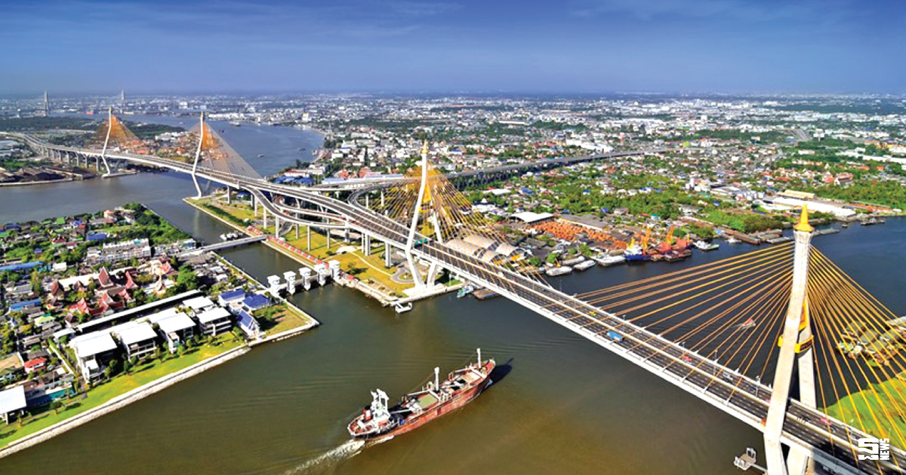

พระสมุทรเจดี พระเจดีย์กลางน้ำ
พระสมุทรเจดีย์หรือที่ชาวบ้านมักจะเรียกกันว่า พระเจดีย์กลางน้ำ ภายในเป็นที่บรรจุพระบรมสารีริกธาตุ 12 องค์ ซึ่งได้อัญเชิญมาจากพระบรมมหาราชวัง พระปิฎกธรรม พระปางห้ามสมุทร และพระชัยวัฒน์ ในสมัยพระบาทสมเด็จพระมงกุฎเกล้าเจ้าอยู่หัว หลังจากนั้นได้จัดงานสมโภชอย่างยิ่งใหญ่ นั่นคือ งานนมัสการองค์พระสมุทรเจดีย์และงานกาชาดจังหวัดสมุทรปราการ จนกลายเป็นประเพณีสืบมาถึงปัจจุบันนี้ โดยจะจัดขึ้นในวันแรม 5 ค่ำ เดือน 11 ของทุกปี ก่อนเริ่มงานพุทธศาสนิกชนจะพร้อมใจกันไปช่วยเย็บผ้าแดงผืนใหญ่สำหรับห่มองค์พระสมุทรเจดีย์ เมื่อถึงวันงานจะมีการเชิญผ้าแดงขึ้นตั้งบนบุษบก ใช้เรือยนต์เป็นขบวนแห่ไปรอบ ๆ ตัวเมือง และเชิญผ้าแดงแห่ไปตามลำน้ำเจ้าพระยาจนถึงอำเภอพระประแดง เพื่อให้ชาวพระประแดงร่วมอนุโมทนา แล้วจึงนำขบวนแห่กลับมาทำพิธีทักษิณาวรรตรอบองค์พระสมุทรเจดีย์ จากนั้นนำขึ้นห่มรอบองค์พระสมุทรเจดีย์
สะพานภูมิพล
สะพานวงแหวนอุตสาหกรรม
นับเป็นโครงการในพระราชดำริของพระบาทสมเด็จพระปรมินทรมหาภูมิพลอดุลยเดช มหิตลาธิเบศรามาธิบดี จักรีนฤบดินทร สยามินทราธิราช บรมนาถบพิตร ที่มุ่งคลี่คลายปัญหาจราจรในเขตกรุงเทพมหานครและปริมณฑล โดยเฉพาะการอำนวยความสะดวกด้านการจราจรและเป็นเส้นทางโลจิสติกส์เชื่อมโยงย่านอุตสาหกรรมของพื้นที่เขตราษฎร์บูรณะ ยานนาวา จังหวัดกรุงเทพมหานครและ อำเภอสำโรงใต้ จังหวัดสมุทรปราการ ผ่านโครงข่ายของถนนวงแหวนอุตสาหกรรมที่สามารถเชื่อมโยงระบบโครงข่ายอย่างครอบคลุม
งดงามด้วยสถาปัตยกรรมที่โดดเด่น
“สะพานภูมิพล 1 และสะพานภูมิพล 2” ในแนวถนนวงแหวนอุตสาหกรรมนี้พระบาทสมเด็จพระเจ้าอยู่หัวฯเสด็จพระราชดำเนินทรงประกอบพิธีวางศิลาฤกษ์ เมื่อวันที่ 29 พฤษภาคม พ.ศ.2543 และก่อสร้างสำเร็จในช่วงปีมหามงคลที่พระบาทสมเด็จพระเจ้าอยู่หัวฯทรงครองสิริราชสมบัติครบ 60 ปี ในปี พ.ศ.2549
นอกจากประโยชน์หลักในการสัญจรแล้วสะพานภูมิพล 1 และสะพานภูมิพล 2 ยังมีความงดงามในแง่โครงสร้างทางวิศวกรรมและสถาปัตยกรรมที่โดดเด่น นับว่าเป็นอีกหนึ่งสะพานข้ามแม่น้ำเจ้าพระยาที่งดงามที่สุดอีกแห่งหนึ่งที่คนไทยภาคภูมิใจ โดยคณะรัฐมนตรีได้มีมติเมื่อวันที่ 5 มีนาคม 2539 เห็นชอบให้กรมทางหลวงชนบท เป็นผู้ดำเนินโครงการ โดยมีพระราชประสงค์ให้สร้างถนนวงแหวนอุตสาหกรรมสำหรับรองรับรถบรรทุกที่วิ่งอยู่ในเส้นทางเชื่อมโรงงานอุตสาหกรรมในจังหวัดสมุทรปราการกับท่าเรือคลองเตยได้อย่างสะดวก รวดเร็วขึ้น อีกทั้งเพื่อมิให้รถบรรทุกเหล่านี้วิ่งเข้าไปยังตัวเมืองหรือทิศทางอื่นๆทำให้ปัญหาจราจรบรรเทาลงได้
สำหรับประโยชน์ของโครงการอันเนื่องมาจากพระราชดำรินี้เพื่อรองรับการขนถ่ายและลำเลียงสินค้าจากท่าเรือคลองเตยไปยังโรงงานอุตสาหกรรมต่างๆทางตอนใต้ของกรุงเทพมหานครและสมุทรปราการแล้วยังช่วยเสริมโครงข่ายถนนของกรุงเทพมหานครและสมุทรปราการที่เป็นโครงข่ายสำคัญในการขนถ่ายสินค้าในพื้นที่โครงการไปยังส่วนต่างๆของประเทศได้อีกด้วย เช่น ด้านทิศใต้ออกสู่ถนนพระราม 2 หรือทางทิศตะวันตกไปสู่ถนนสุขุมวิทหรือถนนบางนา-ตราด ได้อย่างสะดวกรวดเร็วขึ้น
โครงการถนนวงแหวนอุตสาหกรรมและสะพานภูมิพล 1 และสะพานภูมิพล 2 จัดเป็นสะพานขึงข้ามแม่น้ำเจ้าพระยา 2 ช่วงต่อเนื่องกันและเป็นสะพานขึงข้ามแม่น้ำเจ้าพระยาแห่งที่ 3 และ 4 ของประเทศไทยมีความยาวระยะทางประมาณ 25 กิโลเมตร รูปแบบสะพานขึง สูงจากระดับน้ำประมาณ 54 เมตร ตัวสะพานมีความกว้าง 7 ช่องจราจร ความยาวสะพานรวมทั้งสิ้น 4.2 กิโลเมตร พื้นที่ด้านใต้ความยาวสะพานช่วงกลางแม่น้ำยาว 398 เมตรและความยาวสะพานช่วงหลัง 152 เมตร พื้นที่ด้านเหนือ บริเวณถนนพระรามที่ 3 ความยาวสะพานช่วงกลางแม่น้ำ 326 เมตร และความยาวตัวสะพานช่วงด้านหลัง 128 เมตร พื้นที่ด้านทิศตะวันตก บริเวณถนนสุขสวัสดิ์โดยช่วงจุดต่อเชื่อมระหว่าง 2 สะพานจะมีทางแยกเป็นทางยกระดับขนาดความกว้าง 4 ช่องจราจร ยาวประมาณ 2.2 กิโลเมตรไปบรรจบกับถนนสุขสวัสดิ์ทางทิศตะวันตกด้วย
ทั้งนี้กรมทางหลวงชนบทได้แบ่งรูปแบบการก่อสร้างออกเป็น 2 ช่วง โดยบริเวณคอคอดของพื้นที่บางกระเจ้า อำเภอพระประแดง จังหวัดสมุทรปราการ หรือที่เรียกว่า “สะพานวงแหวนอุตสาหกรรม” จะประกอบไปด้วยทางขึ้น-ลง 3 แห่ง คือ 1.ด้านทิศเหนือ บริเวณถนนพระรามที่ 3 เชื่อมระหว่างตำบลทรงคนอง อำเภอพระประแดง จังหวัดสมุทรปราการ กับแขวงบางโพงพาง เขตยานนาวา กรุงเทพมหานคร มีทางขึ้น-ลงเชื่อมต่อมุ่งหน้าท่าเรือคลองเตย 2.พื้นที่ด้านใต้ บริเวณถนนปู่เจ้าสมิงพราย เชื่อมระหว่างตำบลทรงคะนอง กับตำบลบางหญ้าแพรก อำเภอพระประแดง จังหวัดสมุทรปราการ และ 3. พื้นที่ด้านตะวันตก บริเวณถนนสุขสวัสดิ์ เขตราษฎร์บูรณะ กรุงเทพมหานคร จึงสามารถอำนวยความสะดวกด้วยการเชื่อมโยงได้อย่างทั่วถึง
